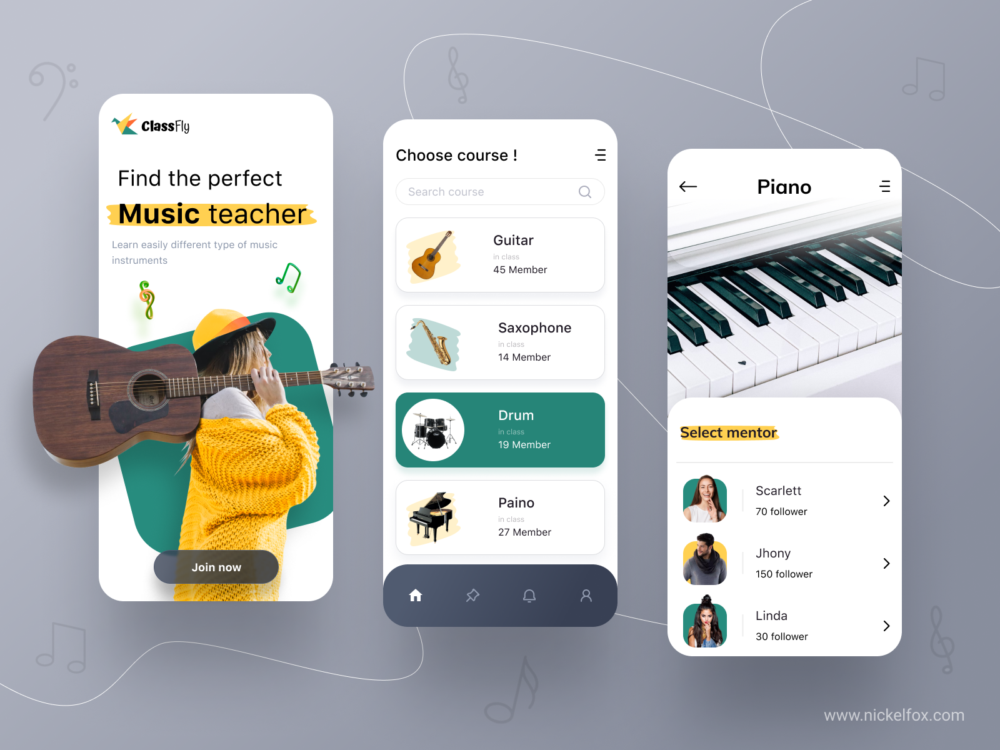
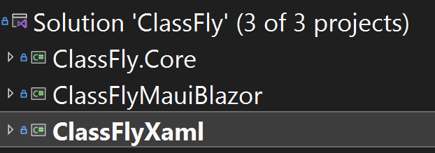
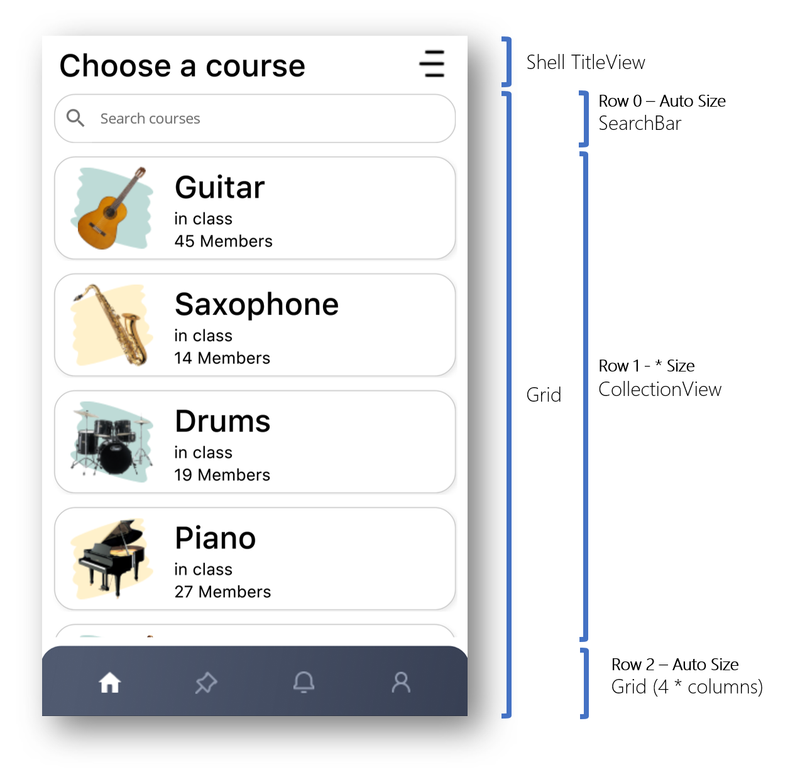
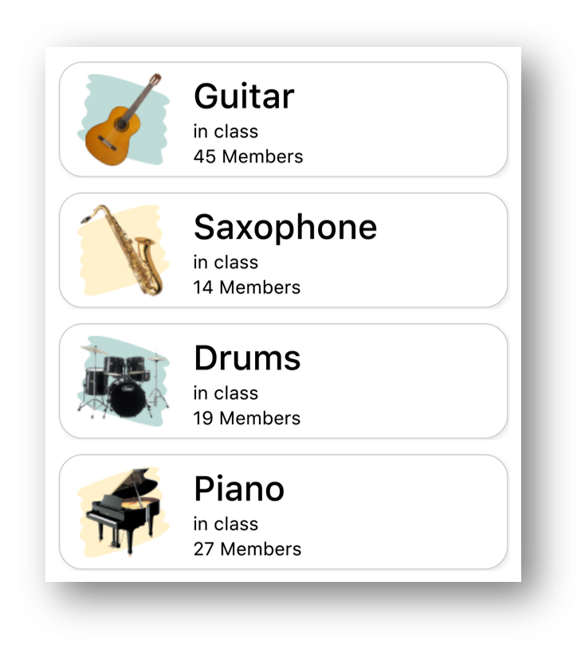
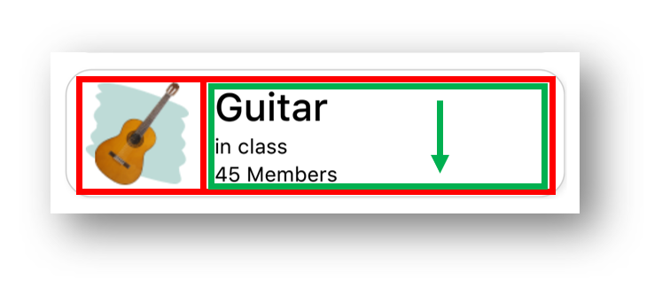
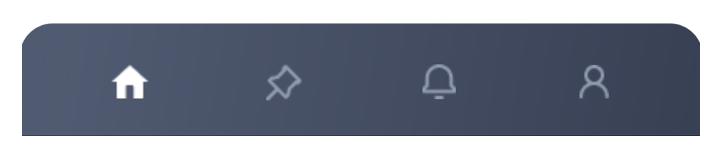
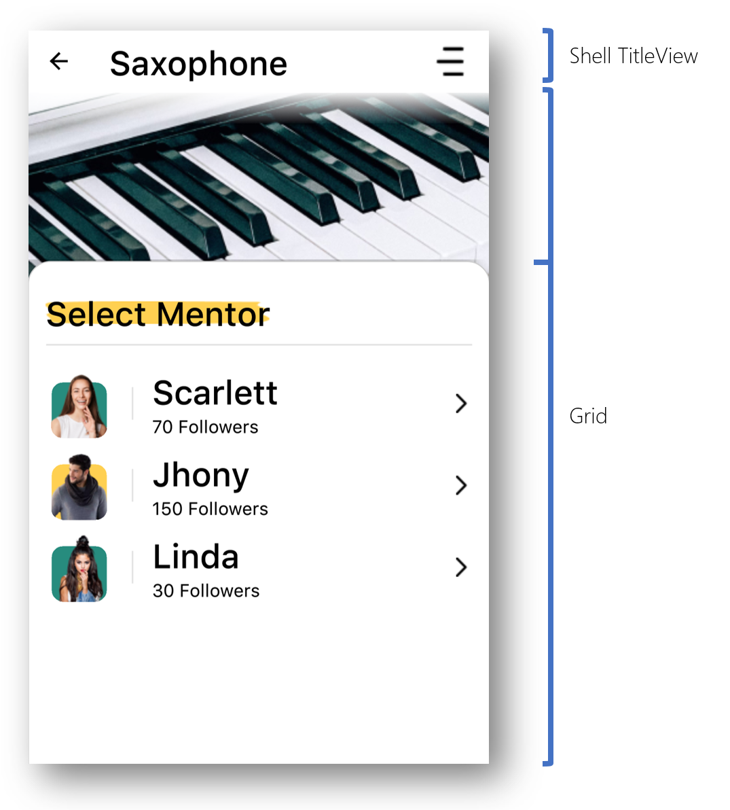
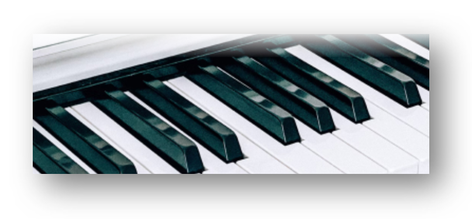
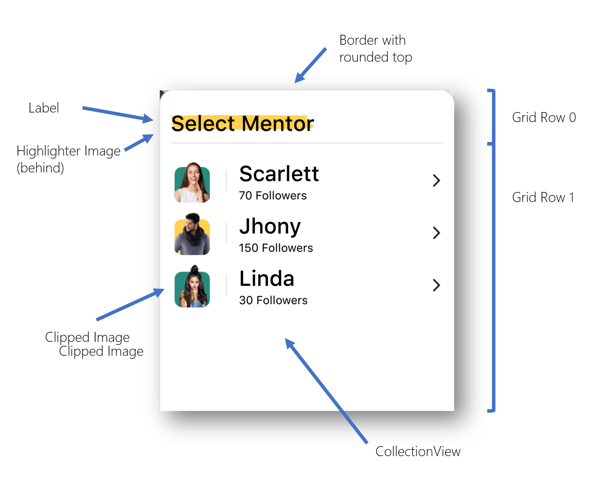
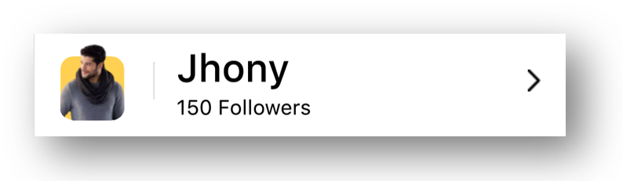

ClassFly UI - XAML vs Blazor - Part 1 - XAML
.NET MAUI gives you a lot of flexibility in how you create your applications. Not only can you target multiple different Operating System platforms (like iOS, Android, Windows, Mac, etc.), you can also target multiple different Form Factors (like phones, tablets, desktop, tv, watch, etc) and you can write your applications using C# Markup, XAML and even Blazor.
With so much choice at our fingertips it can be hard to work out which path to take.
Recently Lachlan Gordon and I have been playing around with Blazor and thought it would be interesting to compare the approaches of XAML vs Blazor. So we set about creating the same application UI using XAML and Blazor to discover the pros and cons.
This is a 2 part blog post by Lachlan Gordon and myself for the .NET MAUI UI July initiative kicked off by Matt Goldman.
UI Inspiration
The design we’re implementing is a music teacher’s app that we found on dribbble, created by Sumit Choudhary. You can check it out at https://dribbble.com/shots/17453615-Classfly-Music-app-concept

It’s a nice looking design, but not anything too crazy - which is exactly what we were after; an app design which represents a pretty common pattern.
The Plan
So here is the plan. I’m going to break down the design of the app from a XAML perspective. Lachlan is going to break down implementing the UI in MAUI Blazor over on his blog https://www.lachlanwgorgon.com and then we will provide a blog post summarizing the pros and cons.
Project Structure
One of the beauties of working in a environment like .NET is code sharing, and for us it means we can have a shared NetStandard library that has our Models, Data Services, and any business logic, which is shared between the XAML version and the Blazor version.

TIP: Use NetStandard libraries to share code independent of UI implementation
Okay, enough rambling, let’s get into the layouts…
Course List Page
Looking at the first page, it’s a pretty standard mobile looking screen. It has a title, a list of items and a tab bar at the bottom.

Let’s look into some of the interesting bits.
Title
For the purposes of this exercise I used the Shell.TitleView element with a simple grid containing a Label and an Image.
<Shell.TitleView>
<Grid Margin="10,0,10,0" ColumnDefinitions="*,30">
<Label
Style="{StaticResource CourseHeaderText}"
Text="Choose a course"
VerticalOptions="Center" />
<Image
Grid.Column="1"
HeightRequest="28"
HorizontalOptions="Center"
Source="menu.png"
VerticalOptions="Center"
WidthRequest="28" />
</Grid>
</Shell.TitleView>
One thing I learnt here is that you should specify the full source name in an image including the extension. It works fine without the extension on Android but on Windows it won’t display. Turns out this is a known issue: #3459 - [Windows] Images are not rendered if the extension is not specified
Search Bar
To create the search bar I used a SearchBar with a Border around it, which seems obvious, but there were some interesting bits
<Border
Grid.Row="0"
Margin="10,0,10,0"
Stroke="#CCCCCC"
StrokeShape="RoundRectangle 20"
StrokeThickness="1">
<SearchBar x:Name="CourseSearchBar" Placeholder="Search courses">
<SearchBar.Behaviors>
<toolkit:EventToCommandBehavior
Command="{Binding SearchTermCommand}"
CommandParameter="{Binding Text, Source={x:Reference CourseSearchBar}}"
EventName="TextChanged" />
</SearchBar.Behaviors>
</SearchBar>
</Border>
First, there is a bug where the search bar does not size correctly on Android #7137 - [Android] [ScenarioDay] The default size of SearchBar is wrong, it does not fill the space. I could work around this with a bit of code which forces a width when the size is allocated
if (DeviceInfo.Platform == DevicePlatform.Android)
{
if (width > 0)
CourseSearchBar.WidthRequest = width;
}
In reality I should probably deal with the padding and margins of the layouts around it. but as a quick hack, did the job.
The other thing I found limiting about the SearchBar is that even though it has command for Search, it’s not enough, for example, as far as I could tell there isn’t a ClearCommand and there is no command (only an event) for TextChanged. So in the end what worked best was using the EventToCommandBehaviour in the Maui Community Tookit to issue the SearchCommand when the TextChanged event occurred.
CollectionView
If you have ever used the CollectionView in Xamarin.Forms then you pretty much know how to use the CollectionView in MAUI.

The rows (cells) in the design call for a couple of interesting things:
- Borders and Shadows around the cell
- Alternating background colours behind the instrument image.
The DataTemplate for the cells is Grid of two columns surrounded by a border. Images in the first column and a StackLayout with 3 labels in the second column

<Border
Padding="16,8"
Background="White"
Stroke="#CCCCCC"
StrokeShape="RoundRectangle 20"
StrokeThickness="1">
<Border.Shadow>
<Shadow
Brush="{StaticResource Gray500}"
Opacity=".15"
Radius="10"
Offset="5,5" />
</Border.Shadow>
<Border.GestureRecognizers>
<TapGestureRecognizer
Command="{Binding Source={RelativeSource AncestorType={x:Type vm:ClassListViewModel}},
Path=GoToCourseDetailsCommand}"
CommandParameter="{Binding .}" />
</Border.GestureRecognizers>
<Grid
ColumnDefinitions="Auto,*"
ColumnSpacing="20"
InputTransparent="True"
IsClippedToBounds="False">
<Image
HeightRequest="80"
Source="{Binding ., Converter={StaticResource IndexToBackgroundImageConverter},
ConverterParameter={x:Reference CourseCollectionView}}"
WidthRequest="80" />
<Image
HeightRequest="80"
Source="{Binding Image}"
WidthRequest="80" />
<VerticalStackLayout Grid.Column="1">
<Label Style="{StaticResource CourseHeaderText}" Text="{Binding Name}" />
<Label Style="{StaticResource CourseSmallText}" Text="in class" />
<Label Style="{StaticResource CourseSmallText}" Text="{Binding MemberCount, StringFormat='{0} Members'}" />
</VerticalStackLayout>
</Grid>
</Border>
The alternating rows have a different colour squiggle behind the instrument which is achieved by having a different background image on odd and even cells determined by a Converter.
<ContentPage.Resources>
<ResourceDictionary>
<converters:IndexToObjectConverter
x:Key="IndexToBackgroundImageConverter"
EvenObject="highlight_green.png"
OddObject="highlight_yellow.png" />
...
public class IndexToObjectConverter : IValueConverter
{
public object EvenObject { get; set; }
public object OddObject { get; set; }
public object Convert(object value, Type targetType, object parameter, CultureInfo culture)
{
int index;
var itemSource = ((CollectionView)parameter).ItemsSource;
if (itemSource is IList list)
{
index = list.IndexOf(value);
}
else
{
index = ((IEnumerable<Object>)itemSource).ToList().IndexOf(value);
}
return index % 2 == 0 ? EvenObject : OddObject;
}
public object ConvertBack(object value, Type targetType, object parameter, CultureInfo culture)
{
throw new NotImplementedException();
}
}
Using a converter like this is one way to do alternating rows and because we are just changing one thing (the image source) it’s fine. Another approach is to use a DataTemplateSelector if you want to have completely different styled alternating rows. A third approach is to convince your designer not to do alternating rows. 😀
Tab Bar
For the purposes of this exercise I did not get around to doing a proper TabBar for the design. Ultimately I’d like to be able to use a customized version of the Shell Tabs but that is for another article. So instead I used just a grid with some buttons and a border with a gradient.

<!-- resources -->
<Color x:Key="TabBarDark">#384054</Color>
<Color x:Key="TabBarLight">#505A70</Color>
<LinearGradientBrush x:Key="TabBarGradient" StartPoint="0,0" EndPoint="1,1">
<GradientStop Offset="0.1" Color="{StaticResource TabBarLight}" />
<GradientStop Offset="1.0" Color="{StaticResource TabBarDark}" />
</LinearGradientBrush>
<!-- tab bar -->
<Border
Grid.Row="2"
Margin="-1"
Padding="20"
Background="{StaticResource TabBarGradient}"
Stroke="#CCCCCC"
StrokeShape="RoundRectangle 20,20,0,0"
StrokeThickness="0">
<Grid
ColumnDefinitions="*,*,*,*"
HeightRequest="30">
<ImageButton ...
<ImageButton ...
<ImageButton ...
<ImageButton ...
</Grid>
</Border>
Notice that Margin of -1 in the border, this is a workaround for a known bug #7764 - Border Margin
Course Details Page
The basic layout of this page a TitleView (similar to the first page), then a Grid with two rows for the top image and the CollectionView panel at the bottom.

TitleView
The TitleView is exactly the same as on the first page with the slight exception that the text on the Label is bound to the Selected Course.Name property.
Top Section
The top image isn’t particularly interesting other than we can use things like a LinearGradientBrush and a Border to overlay some fading over top of the image.

<LinearGradientBrush x:Key="WhiteFadeGradient" StartPoint="0,0" EndPoint="0,1">
<GradientStop Offset="0.0" Color="White" />
<GradientStop Offset="1.0" Color="#00FFFFFF" />
</LinearGradientBrush>
...
<Grid RowDefinitions=".25*, .75*">
<Image
Margin="0,0,0,-20"
Aspect="AspectFill"
HorizontalOptions="Fill"
Source="piano_large.jpg"
VerticalOptions="Start" />
<Border
Grid.Row="0"
Margin="-2"
Background="{StaticResource WhiteFadeGradient}"
HeightRequest="30"
HorizontalOptions="Fill"
Stroke="#CCCCCC"
StrokeShape="Rectangle"
StrokeThickness="0"
VerticalOptions="Start" />
Bottom Card

The bottom card shape is done with yet another Border to create the card shape.
The contents of the bottom card are contained within a grid with rows for the Card Header and the CollectionView
<Border
Grid.Row="1"
Margin="-2"
Padding="16,16"
Background="White"
Stroke="#CCCCCC"
StrokeShape="RoundRectangle 20,20,0,0"
StrokeThickness="1">
<Border.Shadow>
<Shadow
Brush="Black"
Opacity="0.2"
Radius="20"
Offset="-20,-20" />
</Border.Shadow>
<!-- Card Contents-->
<Grid RowDefinitions="60,*">
<!-- Card Header -->
<Image
Aspect="Fill"
HeightRequest="20"
HorizontalOptions="Start"
Source="highlight_heading.png"
VerticalOptions="Center"
WidthRequest="200" />
<Label
Grid.Row="0"
Style="{StaticResource CourseHeaderText}"
Text="Select Mentor"
VerticalOptions="Center" />
<Rectangle
Fill="{StaticResource Gray100}"
HeightRequest="2"
HorizontalOptions="Center"
VerticalOptions="End" />
<!-- Mentor List -->
<CollectionView ...
x:Name="MentorsCollectionView"
Grid.Row="1"
Margin="0,20,0,0"
ItemsSource="{Binding Course.Mentors}">
<CollectionView.ItemsLayout>
<LinearItemsLayout ItemSpacing="10" Orientation="Vertical" />
</CollectionView.ItemsLayout>
<CollectionView.ItemTemplate>
<DataTemplate>
...
</DataTemplate>
</CollectionView.ItemTemplate>
</CollectionView>
</Grid>
</Border>
Mentor cell

The layout of the Mentor cell is a pretty straight forward Grid so not much to discuss there. The interesting parts are the alternating background colors and “cutout” behind the profile photos.
The colors are done using a alternating row converter just like in the first page, but this time it returns a color rather than an image.
<Color x:Key="EvenRowColor">#278C7E</Color>
<Color x:Key="OddRowColor">#FFD051</Color>
...
<converters:IndexToObjectConverter
x:Key="IndexToBackgroundColorConverter"
EvenObject="{StaticResource EvenRowColor}"
OddObject="{StaticResource OddRowColor}" />
The “cutout” section is done through an Image.Clip which clips just the bottom corners of the image to match the corners of the background RoundRectangle.
<DataTemplate>
<Grid ColumnDefinitions="60,5,*,20" ColumnSpacing="15">
<RoundRectangle
Grid.Column="0"
CornerRadius="10"
Fill="{Binding ., Converter={StaticResource IndexToBackgroundColorConverter},
ConverterParameter={x:Reference MentorsCollectionView}}"
HeightRequest="50"
HorizontalOptions="Center"
VerticalOptions="End"
WidthRequest="50" />
<Image
HeightRequest="60"
HorizontalOptions="Center"
Source="{Binding Image}"
VerticalOptions="End"
WidthRequest="60">
<Image.Clip>
<RoundRectangleGeometry CornerRadius="10" Rect="5,0,50,60" />
</Image.Clip>
</Image>
<!-- vertical divider line -->
<Rectangle
Grid.Column="1"
Fill="{StaticResource Gray100}"
HeightRequest="30"
HorizontalOptions="Center"
VerticalOptions="Center"
WidthRequest="2" />
<VerticalStackLayout Grid.Column="2">
<Label Style="{StaticResource CourseHeaderText}" Text="{Binding Name}" />
<Label Style="{StaticResource CourseSmallText}"
Text="{Binding FollowerCount, StringFormat='{0} Followers'}" />
</VerticalStackLayout>
<Image
Grid.Column="3"
HorizontalOptions="Center"
Source="right.png"
VerticalOptions="Center" />
</Grid>
</DataTemplate>
Summary
Okay, so thats about it for this blog post… I’m already behind schedule for MAUI UI July. The follow up to this is an article by Lachlan on how to implement the same thing in MAUI Blazor (I’ll post a link here when that’s available). Then stay tuned for a shared article where we discuss the advantages and disadvantages of using Blazor layout vs XAML layouts.
Till then, please check out the other .NET MAUI UI July articles and thanks again to Matt Goldman for organizing.
Source Code
If you want to check out the source code, it’s available over at https://github.com/kphillpotts/MAUI-UI-July